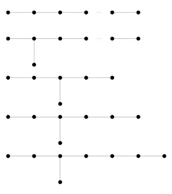
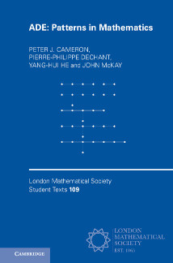

This book was published in the London Mathematical Society Lecture Note Series in 2025, from Cambridge University Press; 9781009335966 (hardback), 9781009335980 (paperback).
Here I will keep items related to the book or its subject, the celebrated ADE diagrams and their many occurrences in mathematics.
 
The diagrams and the book
Two of the authors
If and when I learn about new ADE stories, I will put a note here. There is no guarantee that they do not extend to, for example, all Coxeter–Dynkin diagrams, or even that such an extension is not already in the literature.
I found this in the thesis of Dié Gijsbers at the University of Eindhoven, written under the supervision of Arjeh Cohen and David Wales. Here is some background, which lies in the subject area of knots and links.
The braid group on n strings is generated by n−1 elements s1, …, sn−1 satisfying the following relations:
The question whether the braid group is a linear group was open for some time, but was resolved in the affirmative by Bigelow and Krammer (independently).
The Hecke algebra is a deformation of the braid group. There is a trace function on the Hecke algebra which gives rise to the so-called HOMFLY polynomial, a famous knot invariant. (The acronym is the initial letters of its discoverers, Hoste, Oceanu, Millet, Freyd, Lickorish and Yetter.)
All this can be generalised to the ADE diagrams (and parts even to all the spherical Coxeter–Dynkin diagrams, but I will stick to ADE). The Artin group generalises the braid group by taking a generator for each vertex of the diagram, and imposing the braid relation if the two vertices are adjacent and the commuting relation otherwise. The definition of the Hecke algebra also generalises. Cohen and Wales showed that all the Artin groups of type ADE are linear.
The BMW algebra, named for its discoverers Birman and Wenzel and independently Murakami, is a further deformation of the braid group. This was extended to the other ADE types by Cohen, Gijsbers and Wales.
Gijsbers' thesis discusses all this in far more detail, including the connection with knots and links, the Brauer algebra, and details of the linear representations.At a workshop on Algebra, Combinatorics, Dynamics and Applications in Belfast in 2013, I learned some numerology in a talk by Dmitriy Rumynin. There is much more to it than numerology, as the talk showed; but I will stick to that.
Pierre Deligne proposed that the Lie algebras E6, E7 and E8 and the other exceptional Lie algebras are not sporadic but actually part of a family. Indeed, he gave a formula, namely
−2(λ+5)(λ−6)/λ(λ−1),
which for various negative rational values of λ evaluates to the dimensions of all the exceptional Lie algebras and a few small classical ones too for good measure (A1, A2 and D4). In particular, for λ=−1/2, −1/3, −1/5, its values are 78, 133, 248, the dimensions of E6, E7, and E8.
Now someone pointed out that there is an obvious gap here, namely λ=−1/4, for which the formula evaluates to 190. The mythical Lie algebra of dimension 190 has been named E7.5. Dmitriy didn't want to talk about this, but when someone asked him "Does it exist?" he replied, "It is more real than I am: it has a Wikipedia page, I don't."
Indeed, there is a Lie algebra of dimension 190; it is not simple, but is related to E7. It is an extension of a Heisenberg algebra associated with E7 with the algebra E7 itself, and the numerology is
133+1+56 = 190.
YOu can find references on the Wikipedia page.